Systems Thinking
Finding Leverage Points: Reversing Vicious Cycles
Everywhere communities depend on their lands and waters for survival, people are fighting the damage to them. Their efforts are inspiring, but many do little more than swim against the current. They soften the blows while the ecosystem keeps spiraling towards collapse. Changing the direction of that spiral takes more than managing symptoms of decline one at a time. Vicious cycles of decline take hold when problems for the ecosystem are built into how communities work, live, and subsist. These are the cycles that need to be broken.
Many communities have shown that even the most dire conditions can be turned around. Applied in the right places, force can reverse the current and send the spiral toward regeneration instead of collapse. Those well chosen sites of intervention are EcoTipping Points, or points in the human-environment system where a turnabout can be generated if the right changes are set in motion. Those successful communities wielded the force of a positive tipping point lever. Their actions successfully set in motion the changes needed to make a switch from decline to restoration and sustainability. Not all restorative actions carry enough force to tip conditions in the human-environment system from decline to restoration, but our case studies have provided crucial insights into the qualities of positive tipping point levers and what it takes to put them into action.
Our Systems Thinking framework gives you the tools to devise positive tipping point levers. With it, communities can use a systems lens to understand what's driving their ecological decline, then find well-chosen actions that put the power of EcoTipping Points to work and create a turnabout towards restoration.
How This Tool Works
This tool is a framework for using systems thinking to help communities make strategic choices aimed at reversing ecological decline that is pushing them toward possible environmental and social collapse. When a community faces decline, a turnabout is possible by devising positive tipping point levers that intentionally create virtuous cycles powerful enough to tip the balance towards harmony. The framework has five parts, each an important step for turning things around. Using the lens of Systems Thinking, the five steps give you the tools to:
- UNDERSTAND in general why EcoTipping Points can help with problem-solving
- RECOGNIZE the web of interconnected problems across the ecosystem and human social system at a particular location
- MAP relationships of cause and effect with diagrams that reveal where vicious cycles are coming into play
- REVERSE It by using those diagrams to identify root causes driving decline, sites for effective intervention (EcoTipping Points), and feasible actions with enough force to trigger systemic change (Positive Tipping Point Levers)
- LOCK IT IN with strategies to make gains sustainable
Our strategies for identifying effective modes of intervention draws from patterns reflected in more than 100 case studies [should be the approximately 36 comprehensive studies instead of the 100? -Ryan] that we have documented from around the world, case studies where local communities have found effective levers for positive change. On our resources page, Community Sessions provides resources to lead community members through information gathering, mapping sessions and feasibility testing to devise their own positive tipping point levers using Systems Thinking.
We use two case studies for illustrative purposes in the explanations that follow. Before continuing, we suggest watching these two videos, which present the story narratives for these case studies:
[Put players for the two videos here]
Understand It
EcoTipping Points and Systemic Change
This 1-minute video summarizes the concept of EcoTipping Points.
What are EcoTipping Points?
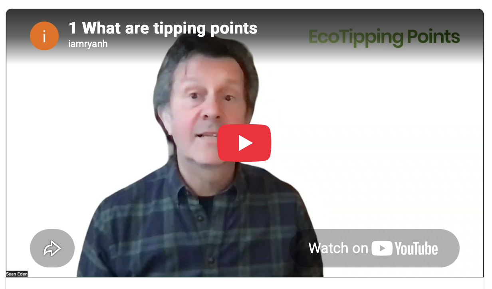
EMBED FOUNDATIONS VIDEO #1 READ SCRIPT
Key Concept: Positive EcoTipping Points are points in a human-environment system where carefully directed actions can set in motion changes that generate a turnabout from decline to restoration and sustainability.
Systems Thinking is a framework that looks at ecological decline as a consequence of interconnected elements across the human-environment system. Ecosystems and social systems are interwoven in an intricate relationship, with transformations in one part of the system creating ripples of impacts and pressures in other parts: declining fish stocks push fishers toward destructive methods, which damages reefs further, which reduces fish stocks more. Circular chains of interconnected impacts like this are feedback loops that create vicious cycles. They are why problems that seem simple resist easy fixes. Addressing individual symptoms, no matter how urgent, is limited in its impact.
Feedback loops can also reinforce restorative change: rebuilding traditional rainwater-harvesting ponds replenishes aquifers, which revives forest and vegetation, which prevents erosion, which make it easier for communities to maintain their ponds. These are virtuous cycles, and finding the right ones to intentionally set in motion is the key to reversing decline.
[Put Foundations video #3 here]
Environmental losses will eventually lead to social losses. And so the interconnected human-environment system can be in a harmonious or self-destructive state depending on the choices we make and whether they create conditions in which social and environmental gains go hand-in-hand. EcoTipping Points are points in a human-environment system where sets of actions have the power to propel the system from one of those states to another. We call these powerful actions tipping point levers. Crossing a threshold happens when tipping point levers set in motion self-reinforcing vicious or virtuous cycles that feed into each other with such amplifying force that changes cascade through the human-environment system, spiraling it towards collapse or restoration.
For communities experiencing ecological decline, there have been negative tipping point levers that set in motion the vicious cycles pushing communities to maintain practices that further degrade their ecosystem and their lives. Frequently those negative tipping point levers are changes in technologies used by communities, brought on by shifts in their political, economic, or technological landscapes. Though they may be rooted in events many decades earlier, the vicious cycles they set off become deeply integrated across the human-environment system, inseparable from the workings of the community. Systems thinking gives us a way to see those cycles clearly. Once the pattern is visible, the question shifts from “how do we fix everything?” to “where can we intervene to start reversing it?” Knowing where the system is most open to change enables communities to devise targeted interventions powerful enough to act as levers for reversing decline. These positive tipping point levers set in motion a chain of self-reinforcing restorative impacts that cascade change through the human-environment system, creating a turnabout from decline to restoration. Finding the sites for these EcoTipping Points is the goal of using systems thinking to map and analyze the problem of decline.
EcoTipping Points in Action: What are EcoTipping Points?
This ?-minute video illustrates how ecotipping points occur through chains of cause and effect
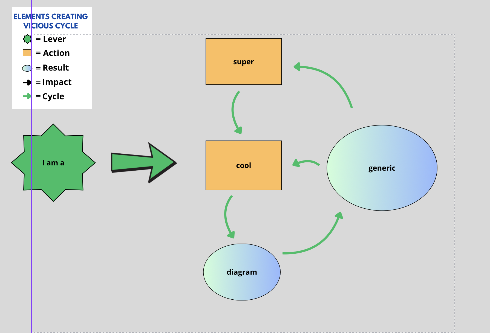
GENERIC DIAGRAM
INGREDIENTS SIDE BAR: Harmony between ecosystem and social System
Recognize It
EcoTipping Points and Systemic Change
How can EcoTipping Points create systemic Change?
This 1-minute video explains the storyline of EcoTipping Points case studies.
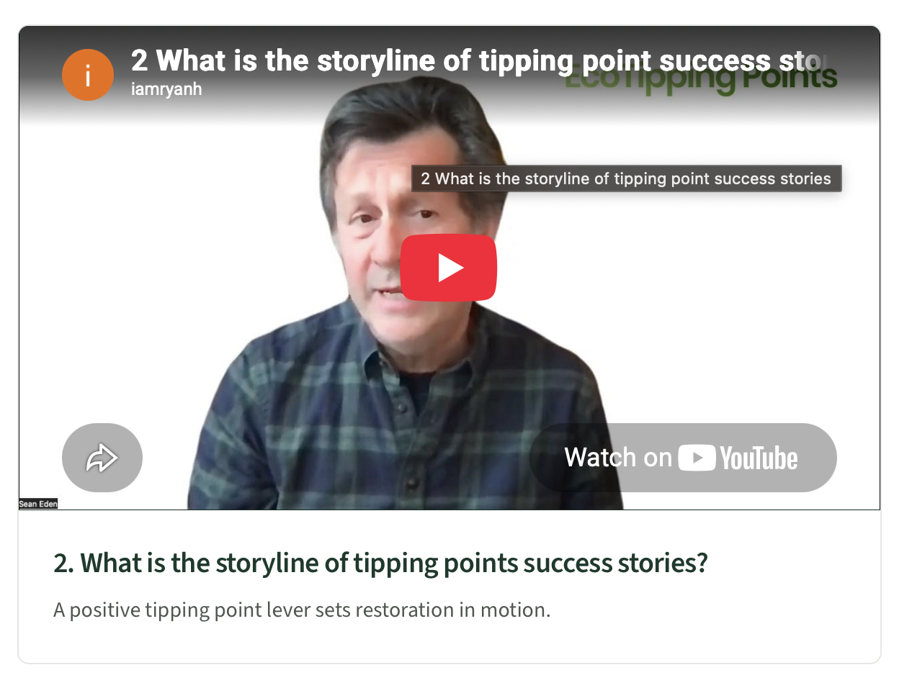
EMBED FOUNDATIONS VIDEO #2 READ SCRIPT
BOX for Key Concept: When changes are made that set in motion powerful vicious or virtuous cycles.
Systems thinking looks at ecological decline as a set of interconnected elements across the human-environment system, tied together by causal relationships that keep conditions improving or worsening. That web is what makes recognizing the scope of the problem one of the greatest challenges in addressing decline. Identifying losses large and small begins to uncover chains of cause and effect, and some of those chains are responsible for the vicious cycles spiraling a community into crisis. How elements spread across the human-environment system are connected is rarely immediately apparent: men leaving their failed crops in Rajasthan villages to find work in the cities is not obviously linked to abandoning maintenance of their traditional rainwater-harvesting ponds, until connections are uncovered between how the dams built to create the ponds channeled rainwater runoff into the aquifer, which provided irrigation water for farming. And, since the departed men were no longer available to help maintain dams, these impacts reinforced each other.
A clear goal of reviewing the history of the problem and assessing the current situation can help bring to light the interconnected elements perpetuating decline in the human-environment system. Those key elements are revealed by going back in time to see how conditions have worsened, what actions or events triggered a change in conditions, how losses for the ecosystem have brought about changes in the human social system, and where chains of cause-and-effect have been set in motion. Surveying the range of changes also helps identify the vicious cycles driving decline, and the turning point towards it. As you explore the scope of the problem, no loss or pressure is too small to consider, because even small impacts can create a vicious cycle driving decline.
Though there are many ways to piece together the scope of the problem, our case studies of successful restoration share similarities in how a clear vision was reached. Outside organizations or individuals often played key roles in stimulating a reckoning and openness to fresh approaches, but the interconnection of different parts of the problem spread across the human-environment system emerged from storytelling and discussion among community members. The experience and memories of a cross-section of community members provided the rich detail needed to recognize the range of losses and sequences of cause-and-effect, and the history of the problem. The memory of elders was an especially rich resource for piecing together how things had changed and for recalling long-held and sustainable resource management practices that had been abandoned or the sequence of events that unfolded when new ones were introduced. They remember how both their communities and ecosystems operated when they were healthier. In our Rajasthan case-study, if one elder had not shared his memories from childhood of the seasonal dam maintenance by the community, a key element of the problem and solution would have been missed.
Ingredients Side Bar
Shared Vision and Commitment, Social and Ecological Memory, Outside Stimulation
Scoping Goals
The scoping goals below are guides to clarifying the structure of the problem. Each scoping goal is illustrated by an example from our Apo-Island case study, in which a fishing village in the Philippines restored its collapsing fishery and way of life with the Positive Tipping Point Levers of establishing a Marine-Sanctuary and creating strict rules for their fishing grounds. But first they pieced together their story to understand why their village was falling apart.
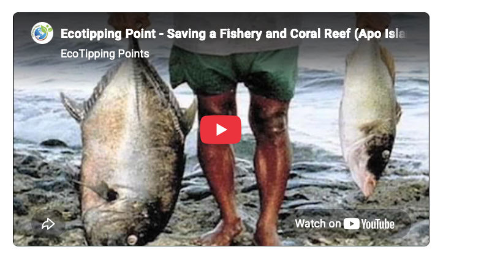
A shift from a better past.
What were conditions like before the decline? This helps identify what the community is trying to recover and how things went wrong.
On Apo Island
The Memory: Elders remembered when the reefs were healthy and fish were abundant, and the fishing techniques they used.
A trigger or starting point.
Was there a specific event or change that set things in motion? A new technology introduced, a policy change, a shift in land use or ownership?
On Apo Island
The Trigger: The introduction of destructive fishing methods led to overfishing and damage to the coral reef ecosystem.
A sequence of connected problems.
Does one problem seem to have caused another? You're looking for chains: this led to that, which made this worse, which caused that.
On Apo Island
The sequence: Destructive fishing methods →Damaged reefs and overfishing → fewer fish→ Greater dependence on destructive fishing methods →Even fewer fish → Fishing further away → Less incentive to protect local waters → More destructive methods→ More reef damage → ↺ Even fewer fish
Thresholds or turning points.
Moments when things got noticeably worse, or faster. These often mark where the system crossed into a new state.
On Apo Island
First turning point: Declining number of fish made destructive fishing essential to catch any fish at all. Second turning point: Fishermen could no longer make a living from island fishing grounds and had to travel farther from home.
Impacts on the social system.
For each environmental loss, what has it meant for people's lives, income, and work?
On Apo Island
The Crisis: Eventually, there was nowhere close by with adequate fish, and the community faced collapse.
Resources for Workshops and Community Sessions
Our case studies suggest that having diverse community members drive the story will bring greater nuance and also create a shared vision of the problems that can underscore their commitment to the challenges and risks involved in taking action. On our resources page, Community Sessions provides resources to lead community members through story telling sessions to devise their own positive tipping point levers using Systems Thinking.
Map It
EcoTipping Points and Systemic Change
This 1-minute video explains how vicious and virtuous cycles drive negative and positive change.
Why are vicious and virtuous cycles key to systemic change?
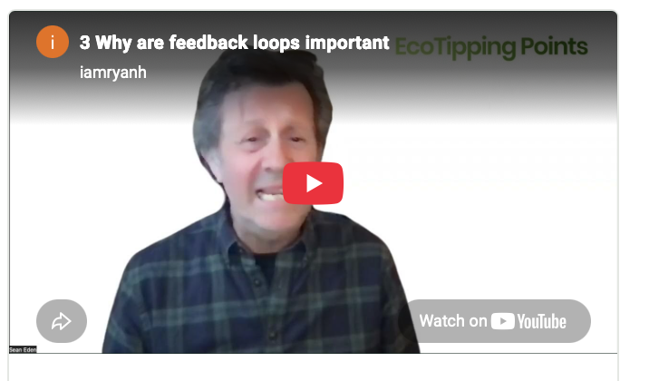
Key Concept: Vicious and virtuous cycles are self-reinforcing and so entrench and intensify impacts.
Diagrams are a vital tool for turning systems thinking into effective action. They expose the relationships of cause and effect spread across the human-environment system, and the potential sites for intervention. This section illustrates how to diagram the connections between current and historical elements of a problem and how to recognize where self-reinforcing feedback loops are coming into play. The Negative Tipping Point Lever that triggered the problem is often too far in the past to alter, and it may no longer be a cause of the problem. However, the vicious cycles it set in motion are responsible for the problem because they are driving it, and those vicious cycles can be reversed with the right set of actions. In the case of Rajasthan, clear cutting of forests by timber companies was the negative tipping point lever that led to the soil erosion and runoff that made it increasingly difficult to maintain the traditional dams channeling rainwater into the aquifer. The clear cutting of aged forests, carried out during the switch of power as India gained independence from England, cannot be reversed. But the vicious cycles that logging set in motion could be turned around. What are those vicious cycles? And where are they located in the human-environment system? Creating a diagram helps locate points in the system where vicious cycles are driving decline, and places in the system that are most open to change if positive tipping point levers are put into action.
Seeing the System in Action:
EcoTipping Points in Action: How do vicious cycles cause collapse?
This ?-minute video illustrates how a vicious cycle of collapse unfolded in Apo Island
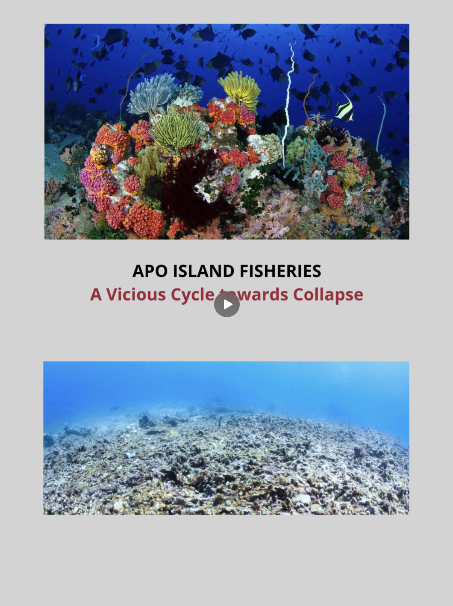
Ingredients Side Bar: Social and Ecological Memory, Harmony between ecosystem and social system
Creating a Diagram
To create a diagram you will need a list of losses, problems, changes, potential triggers, and other experiences that have been part of the story of decline you are mapping. The elements of the problem have historical roots, and so systems thinking requires reviewing the history of the problem to find actions and events connected to the current situation. When you are ready to map, focus less on including every loss, pressure and impact, and more on exposing the connections between the key elements creating the self-reinforcing vicious cycles. It is helpful to distinguish graphically between actions people are taking, and resulting impacts on the ecosystem or social system. In our step-by-step example of how to map the elements of decline, we use rectangles for actions taken by the community and ovals for their resulting impacts on the human-environment system.
There is not one formula for where to begin when creating a diagram. If the negative tipping point lever is obvious, you can begin there and then identify the impacts of that change, and then what further impacts and actions were caused by those consequences. If the negative tipping point lever is not clear, then pick one manifestation of the problem, usually a core resource loss, and draw it in the center to begin your map. Let it unfold from there by going back in time to add what action caused the event, and then even further back in time to add what stimulated that action. The earliest cause in the chain, the event or change that started the whole sequence, is the negative tipping point lever responsible for setting in motion a shift in the human-environment system. Once you have worked your way back to the negative tipping point lever, you can begin to look at the actions and impacts associated with decline in the core resource, and what consequences they had until you have included most elements you recognize as part of the problem. This allows you to build a full picture of the connections that are currently cycling through the human-environment system and creating the vicious cycles driving decline.
As you build your diagram, refer back to the list of elements that you recognize as part of the problem, to see how they are fitting into the system. No impact is too small to consider placing on the map, because even a seemingly insignificant impact may be a critical element of a powerful feedback loop. Any element in your diagram may lead to different actions and impacts, and some of those elements may loop back to something already in the chain of effects. This is when the diagram starts showing vicious cycles coming into play. Highlight these vicious cycles: they are the driving force of decline and the most important places in the system to break. Some feedback loops become especially powerful because they feed into other loops, forming interconnected and mutually reinforcing vicious cycles. These amplifying vicious cycles intensify impacts with such force that destructive changes cascade through the human-environment system and perpetuate decline. The negative tipping point lever that set decline in motion may not be open to change, but the amplifying vicious cycles it triggered may be sites in the system for effective intervention.
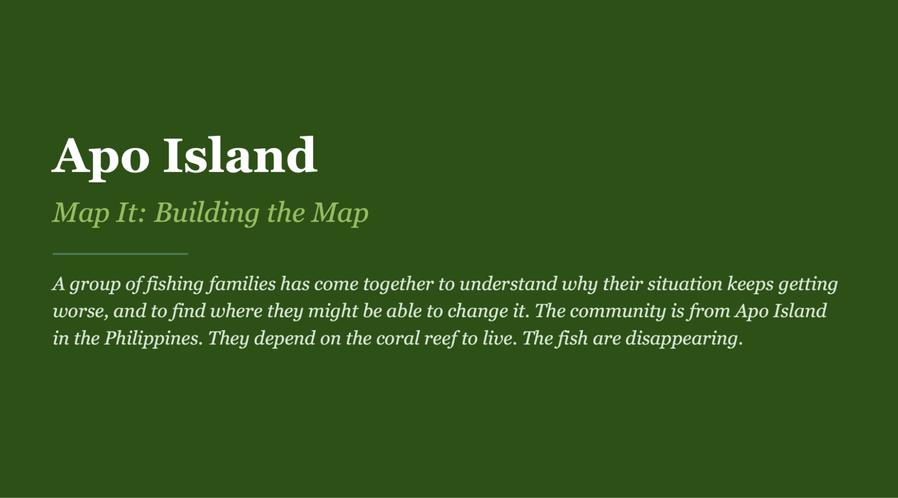
We use the example of Apo Island to illustrate step-by-step one way a Negative Tipping Point can be mapped.
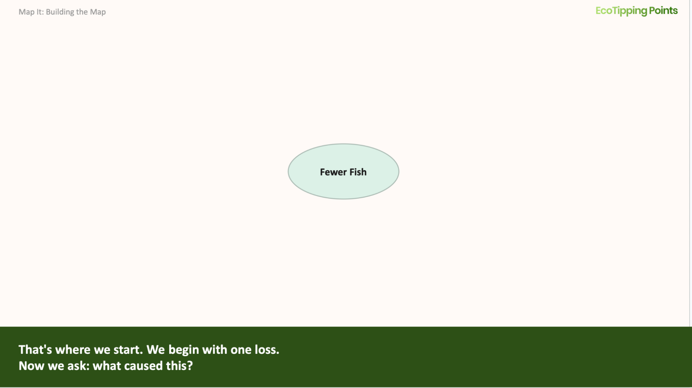
If the Negative Tipping Point Lever is obvious, you can begin there. If not, then pick one item, usually a core resource loss, and draw it in the center to begin your map.
What caused the core loss? Add the cause, noting whether it is an action or an impact. If it is an impact, you know that you have not arrived at the root causes.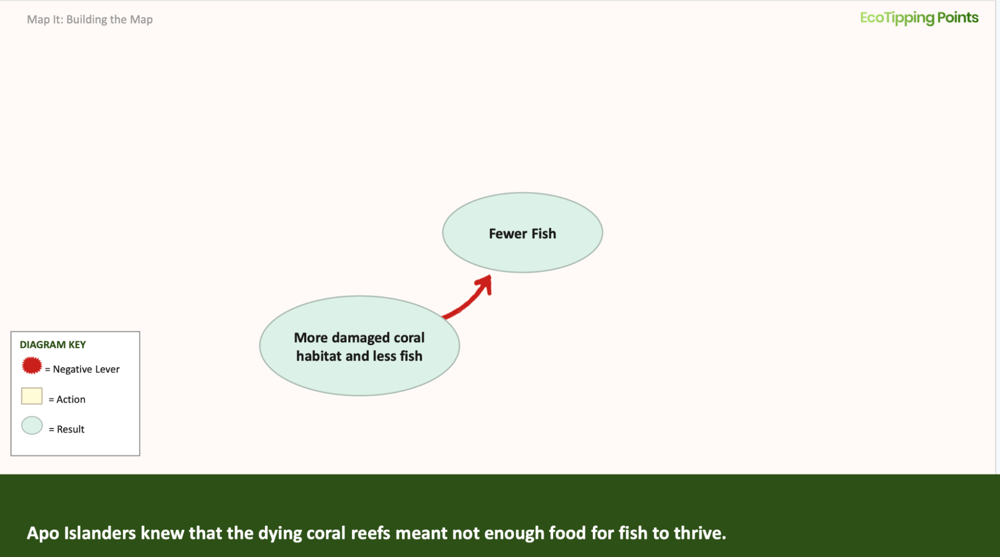
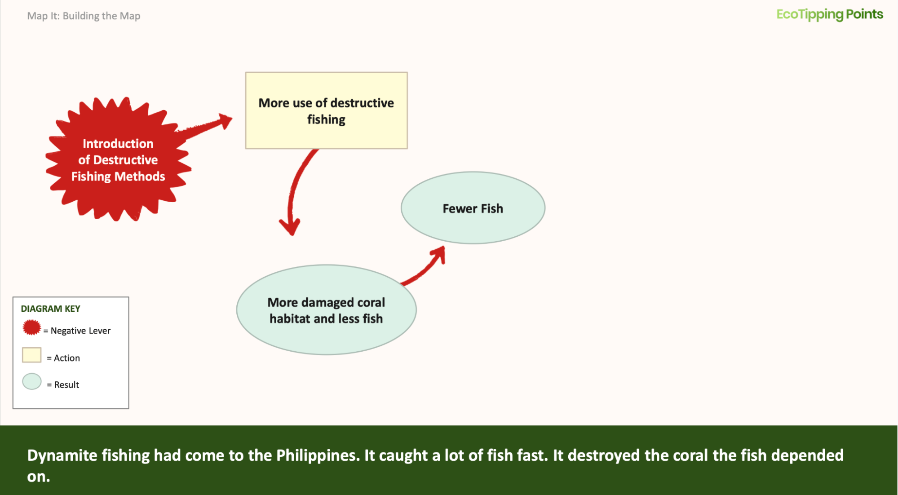
Continue adding causes as you move backwards in time towards root causes. If a cause is an action, it does not necessarily mean it is the negative tipping point lever. It may be a response to prior actions and effects.
What happened before that? Continue back through time until you arrive at an event or set of events that seems responsible for triggering the systemic change. You can label the triggers as the negative tipping point lever.
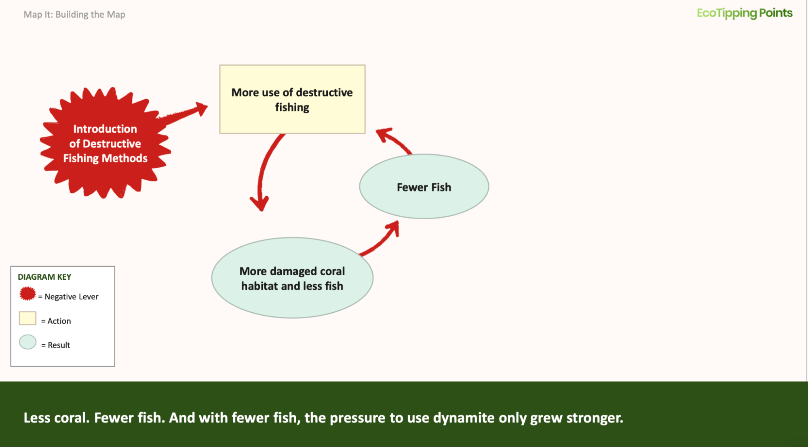
Then look forward in time to how one thing affected another. What happened next? If you see a resulting impact aggravating the problem that caused it, you have revealed a self-reinforcing vicious cycle where the worse things get the worse it makes everything else.
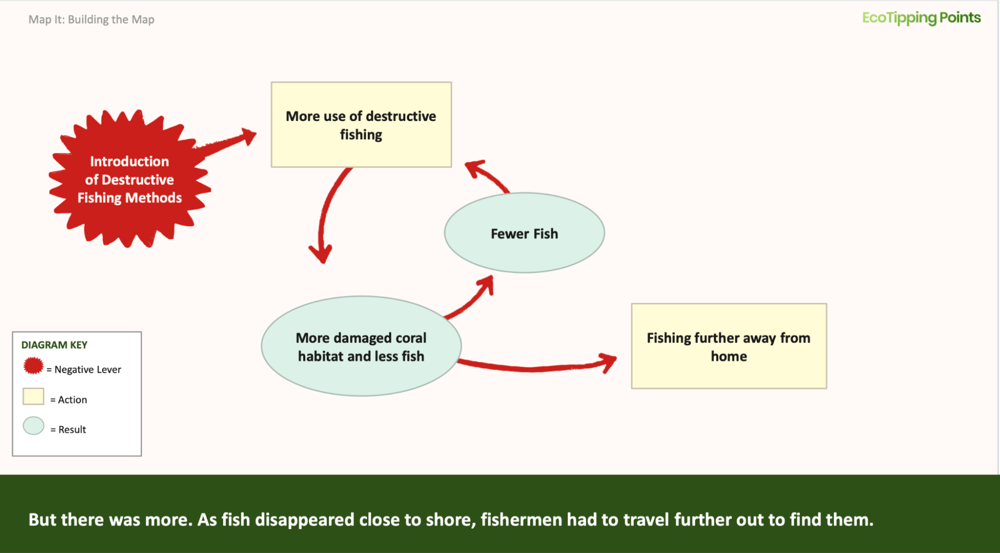
Many elements of your diagram will have more than one resulting impact. Lead those separate directions, so that you can follow the multiple chains of effects being created.
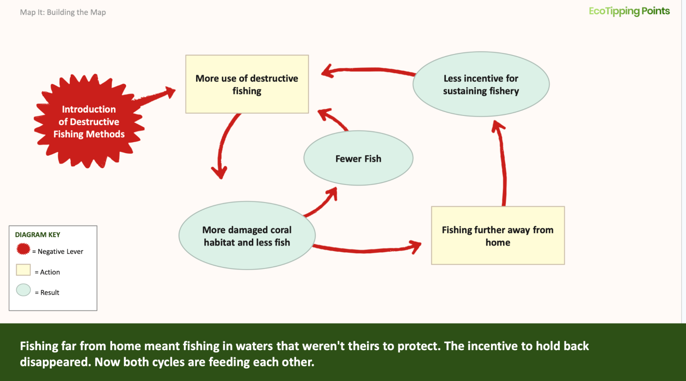
As you see new chains of effects unfold, new vicious cycles will likely feed back into earlier vicious cycles, reinforcing and amplifying each other. It is these amplifying vicious cycles that spiral a system into decline.
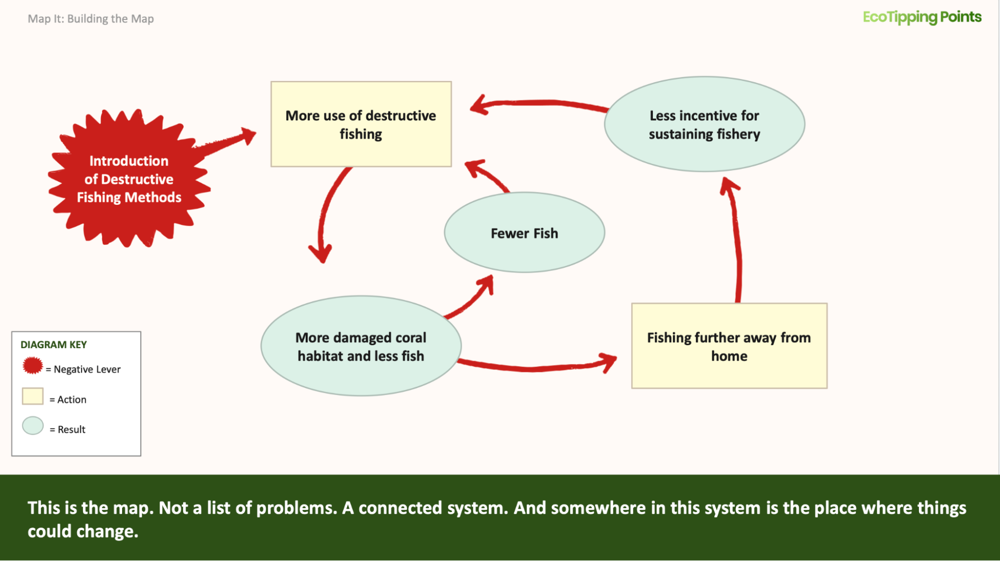
There are many hardships and losses that are direct symptoms of the problem, but they may not end up on your map because they do not cause new problems that drive decline. In complex situations, this may take some trial and error with multiple maps to focus on elements that are part of the vicious cycles driving decline.
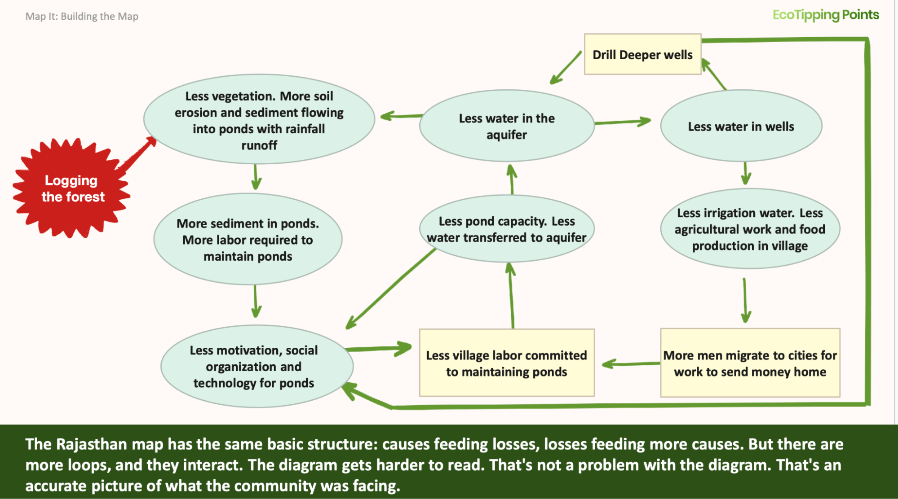
A MORE COMPLEX CASE IN RAJASTHAN: This diagram for a village in semi-arid Rajasthan that faced the loss of precious irrigation water is more complex. Although diagrams like this can take more effort to understand, they provide an accurate picture of what the community is facing. The details will help you find parts of the system to target with a positive tipping point lever for setting restoration in motion.
Reverse It
EcoTipping Points and Systemic Change
What is a positive tipping point lever?
This 1-minute video illustrates how a feedback loop driving decline can be reversed.
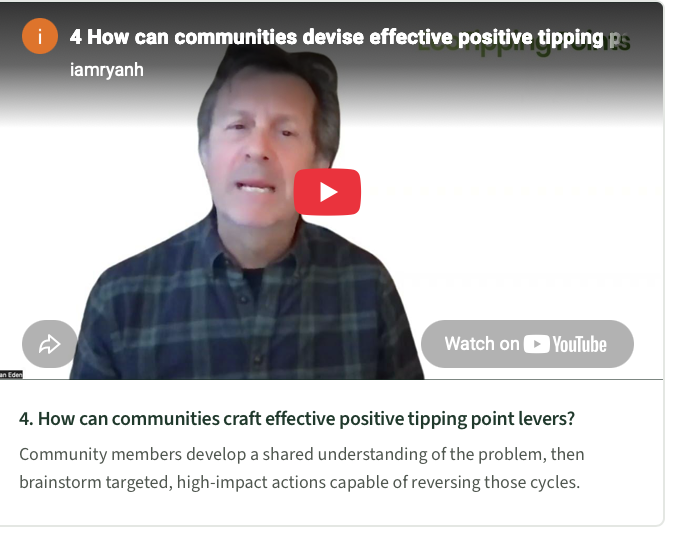
EMBED FOUNDATIONS VIDEO #2 READ SCRIPT
BOX for Key Concept: A positive tipping point lever is a package of actions that set in motion changes leading to a turnabout from decline to restoration and sustainability.
Systems thinking looks at ecological problems as a web of cause and effect spread through the human-environment system. It looks for solutions in sets of actions that ignite change across the system by reversing the self-reinforcing feedback loops driving decline. We call those targeted actions that trigger systemic change positive tipping point levers. Positive tipping point levers have the power to create this change because they disrupt vicious cycles, and replace them with virtuous cycles that cascade restoration through the human-environment system. But not all actions, no matter how committed or resource intensive, can create a turnabout. And so, devising a set of actions that has the right leverage power is the key to setting restoration in motion.
Devising a positive tipping point lever means finding the points in the system most important to transform, and pairing them with actions powerful and achievable enough to set those changes in motion. That power comes from two sources at once: the ecosystem and the community. An action has enough power when it enlists nature's self-restorative processes and sets off chains of cause and effect within the ecosystem far beyond what any community could orchestrate. An action is feasible when the community has the time, labor, resources and commitment to carry it through. Both forces grow when the community's prosperity is tied to the health of its ecosystem. That alignment is what sets virtuous cycles of restoration in motion.
Seeing the System in Action:
EcoTipping Points in Action: How can the right set of actions become a positive tipping point lever?
This ?-minute video illustrates how Apo Islanders created a turnabout in their system with a few well chosen actions.
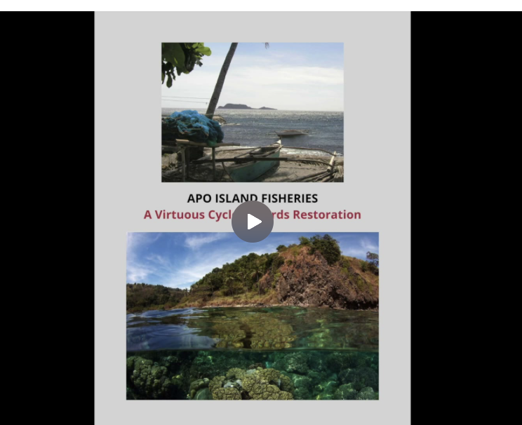
(this is Apo positive tip PART 1)
Ingredients Side Bar: Social and Ecological Memory, Harmony between ecosystem and social system, Letting Nature do the Work, shared understanding and commitment
Devising a positive tipping point lever:
The commonalities in our case studies of success have shed light on what it takes to turn things around with a positive tipping point lever. In our flagship cases, communities began with assessing the scope and history of their problem and recognizing how their own damaging activity was degrading their ecosystem. They then decided to alter the community's role in perpetuating the vicious cycles of decline, by figuring out targeted actions that would let them replace damaging activities with sustainable activities aimed at ecosystem recovery. They chose actions that gave their ecosystem the opportunity to kick in its own self-restorative power, which instigated changes far beyond what they could orchestrate themselves. These actions re-aligned their community's methods of meeting basic needs with choices that would also benefit the ecosystem. The energy and resources they put into revitalizing their ecosystem quickly fed into visible gains for their community. Those gains reinforced their sustainable activity and their commitment to putting gains into new restorative efforts.
Systems thinking describes their recoveries this way:
- Recognized the interconnected elements of their problem and amplifying feedback loops driving decline in the human-environment system
- Dedicated themselves to feasible actions that not only broke, but reversed those feedback loops
- Figured out where in the system feedback loops could be broken by a change in their actions
- Devised actions that replaced destructive activities with sustainable activities that were powerful enough to reverse feedback loops by triggering a new chain of cause and effect leading to ecosystem health
- Directed the benefits of ecosystem recovery into increasing sustainable activity
- Initiated new restorative amplifying feedback loops by putting gains into enterprises that aligned social health with ecological health
- Intentionally broke the vicious cycles and triggered restorative virtuous cycles with such amplifying force that the entire system crossed a threshold from decline to restoration
This Process can be described with a diagram in the following way:
(I used a table to make my layout easier, but not suggesting using a table)
 
|
| 
|
Recognized vicious cycle | A leveraging action is where the reversal begins.It replaces the damaging activity with a sustainable one. | The sustainable activity gives the ecosystem room to recover. |
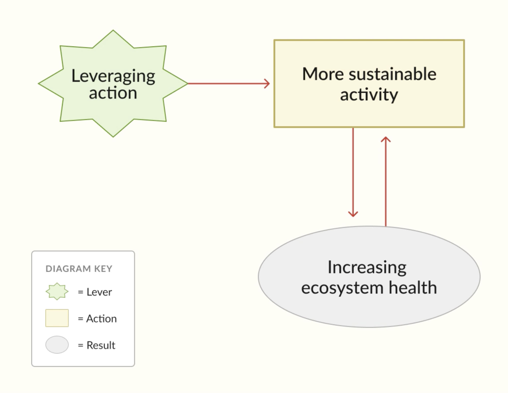
|  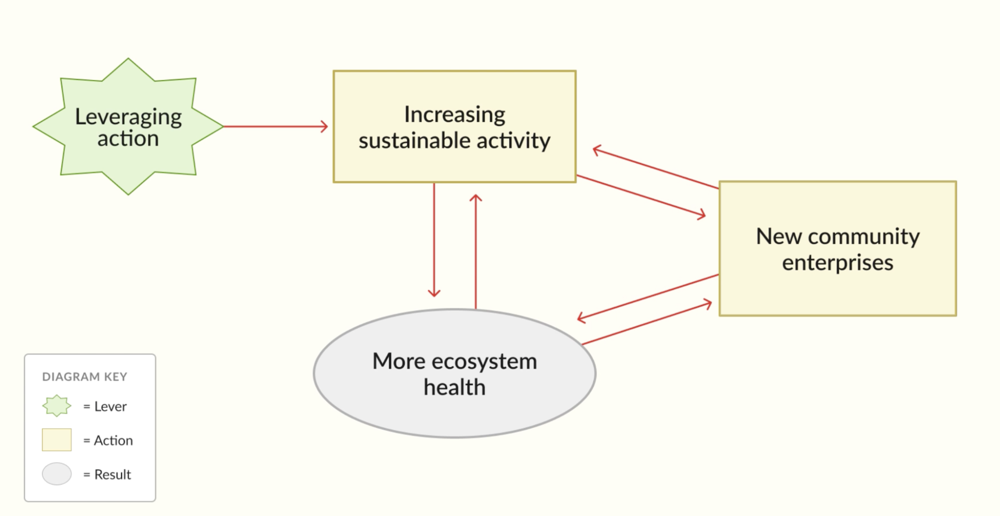
|
And a healthier ecosystem supports even more sustainable activity. There's more to work with, so the practice is easier to sustain. Sustainable activity and ecosystem health now reinforce each other. This is a virtuous cycle. Once it takes hold, it keeps building on itself. | Community enterprise integrate restoration with the social fabric of the community to add new social virtuous cycles that consolidate gains |
Embed animated flowchart here or would that be redundant?
In the case of Apo Island, they devised a positive tipping point lever by creating a marine sanctuary on 10% of their fishing grounds in conjunction with strict enforcement of a ban on destructive fishing on the rest of the island. This is how their set of actions reversed decline:
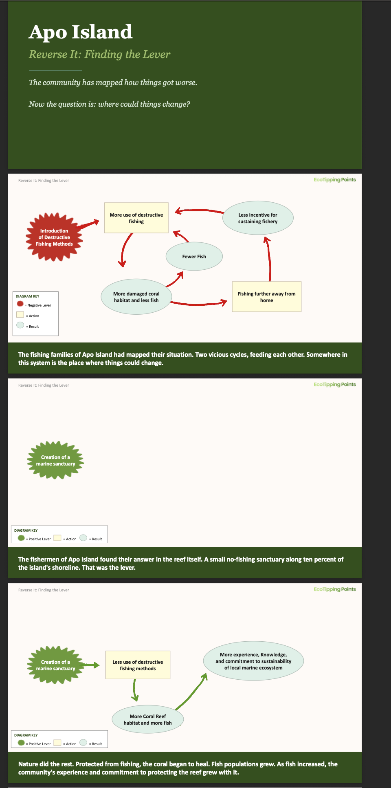
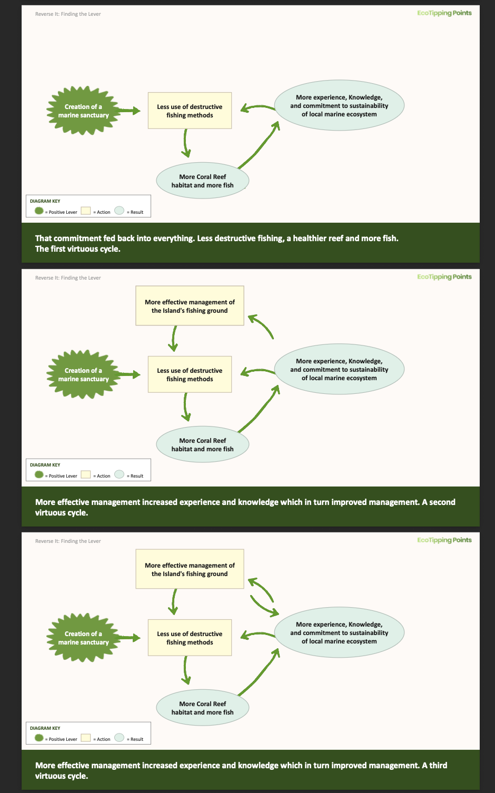
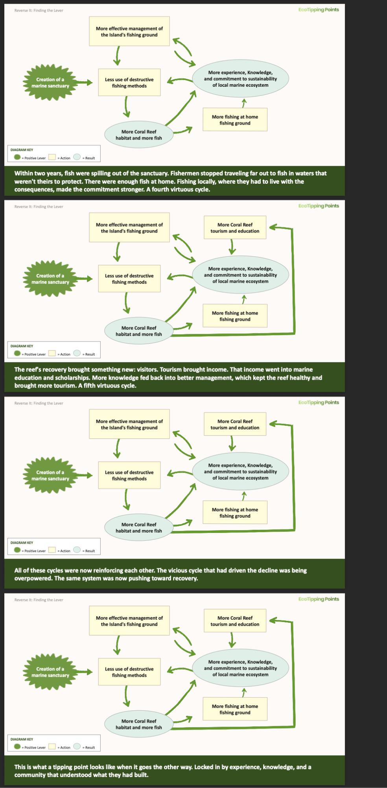
Crossing a threshold from decline to restoration means flipping the feedback loops already at work in vicious cycles so they set virtuous cycles in motion instead. Using systems thinking, these are the steps to finding an action with that kind of leverage:
- Understanding what makes a lever powerful
- Finding powerful actions in the system for leverage
- Choose interventions that are feasible for the community
What makes a lever powerful
A positive tipping point lever must be powerful enough to transform the system by setting off virtuous cycles of change across it. Our case studies of communities that managed a turnabout show common qualities in their levers. We draw upon their Ingredients for Success to cast light on how to devise a lever. Though many vicious cycles can become sites for intervention, only actions that carry tremendous force can tip the balance of ecological degradation. That force comes from both the ecosystem and social system. There is no formula for choosing the right course of action in unique circumstances. But our case studies point to certain qualities of a powerful lever, grounded in how ecosystems function on their own and as part of the human-environment system.
Wherever human communities have developed, they have done so by settling in places where the land and water could sustain them. Where they have endured, it has been through adapting to their environments by building their communities and working their natural environments in ways that also allows the ecosystem to adapt to them. The ecosystem and social system co-adapted: each altered the other, in ways both could absorb while maintaining vitality. Those human-environment systems have been sustainable because enough of the choices made about how to build the society were also good for the ecosystem they relied upon. A powerful lever grounds gains for the community in gains for the ecosystem.
As an ecosystem copes with destructive human activity, it can slowly transform to the point of being uninhabitable as its complex internal relationships and processes can no longer function. When forests were cut down in Rajasthan, not only did many plants and animals lose their habitat, but it slowly shrank the rivers both above and below ground. These same complex internal relationships in nature are the key to devising a powerful positive tipping point lever. Even if those processes have endured tremendous destructive pressure, an infrastructure for regeneration is ingrained in nature's memory through its species' behaviors and ecosystem cycles. The living beings comprising the ecosystem will move towards revitalization if given the opportunity. Plants will grow again if they have access to groundwater. Tigers that left a desertified region will return with a thriving forest. Humans cannot micromanage these intricate ecosystem relationships, but we can create conditions that set nature's self-restorative powers in motion. In the case of Rajasthan, community members built dams to help replenish the aquifer, or underwater rivers, and nature's own internal process took care of reviving dead and dry rivers, forests, wells, animals, irrigation systems, and the community.
Sometimes new innovations help kick in those natural processes. Just as often the answer lies in our memory of social practices built over long years of co-adaptation and then abandoned. Whether the technology is new or old, actions capable of transforming a spiraling decline must draw on nature's self-restorative power, because we do not have the strength or reach to do it on our own. We must ask what would have to be true for the ecosystem to begin recovering on its own, and look for ways to create those conditions.
Finding powerful actions for strategic points in the system
A diagram of the problem is essential for devising a positive tipping point lever, because it shows where in the human-environment system the feedback loops driving decline can be reversed. The diagram clarifies where vicious cycles are at play, how they overlap and intensify each other's force, and which elements in those loops are most open to change. These are the places in the system that are points of leverage. The actions you choose must be effective, must draw on nature's self-restorative power, and must fit the community's current resources. Reviewing the history of the problem helps reveal a point before the decline when human activities were sustainable. Innovations and successes in other communities also offer rich possibilities. The experience of our case studies suggests that strong levers often come from a mixture of new ideas, the knowledge, experience and memories of community members, and the infusion of outside support.
A good starting place is to use your diagram to identify the feedback loops responsible for setting decline in motion. Making sense of how nature's self-restorative powers were damaged in that cycle will also provide clues to effective actions. Then locate feedback loops that play a role in instigating or maintaining multiple vicious cycles. These feedback loops may be particularly effective sites of change, since a transformation there could spiral change through the human-environment system. For each vicious cycle, scrutinize community action as a location for change, since we only have agency within the social system. Start by brainstorming whether the community actions maintaining the loop can be changed in ways that alter the cycle through a restorative impact on the ecosystem. Then imagine whether there are new actions the community could take that might alter the cycle in the same way. With each candidate, speculate on the downstream impacts, to gauge whether it would lead to improvements for the community that encourage sustaining the effort. All of this can point to parts of the system where change could happen with enough force to set a virtuous cycle in motion. Drawing your own maps of the chains of effects a new or changed action might trigger will help determine whether a location is an effective site for action, and whether the action can set virtuous cycles in motion.
Questions to guide your analysis of leverage points:
- Where are the vicious cycles?
- Which vicious cycles are most responsible for driving other vicious cycles?
- Where is the community able to act?
- Which connections within vicious cycles can be broken by community intervention?
- Are there any actions that are preventing nature from restoring itself?
- Are there any destructive activities that the community can discontinue or alter to encourage ecosystem recovery?
- Are there new activities that could be tried that could redirect the vicious cycle? Any old practices, rules, or resources that were abandoned that could be revitalized?
- Has this problem been solved in another community? What did they do to interrupt their decline?
Intervention in a vicious cycle is not always possible. Some may be set in motion by ecological or social processes outside of the community's control, require more resources from the community than they have, or be located in a historical incident that cannot be undone. Recognizing the places in the system that cannot be changed is an important step towards finding where change is possible. In our case study in Rajasthan, the community could not change the fact that their ancient forests had been clear cut for timber, which set in motion their water scarcity. Since that damaging activity could not be replaced, they needed to find some other place in the system with vicious cycles that could be reversed.
If they had searched for leverage points on a diagram of their crisis, it would look like this:
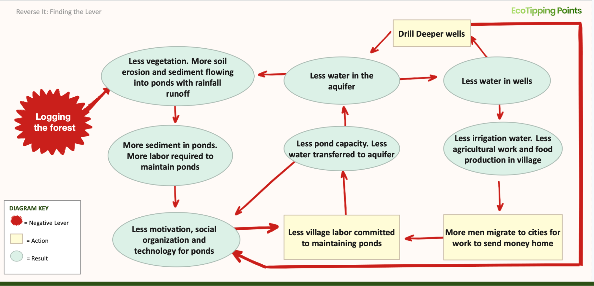
|
|
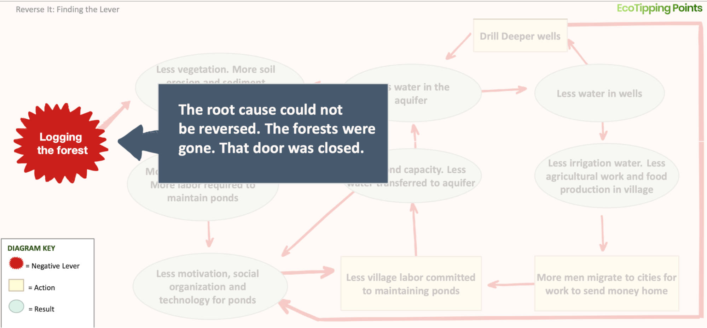
|
|
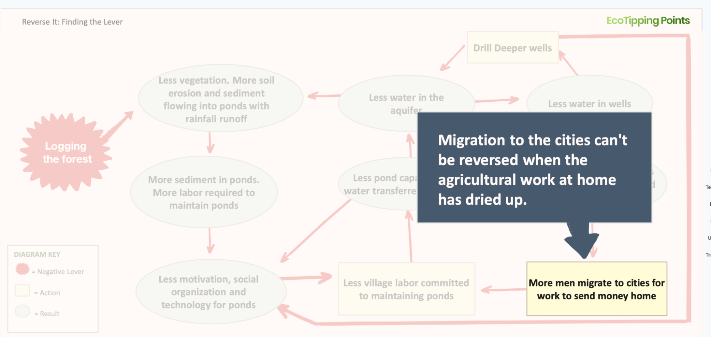
|
|
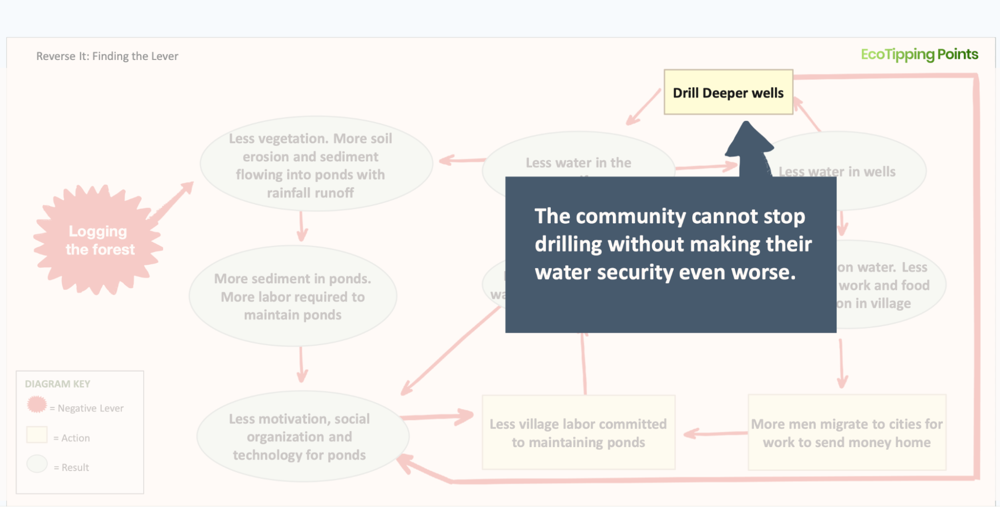
|
|
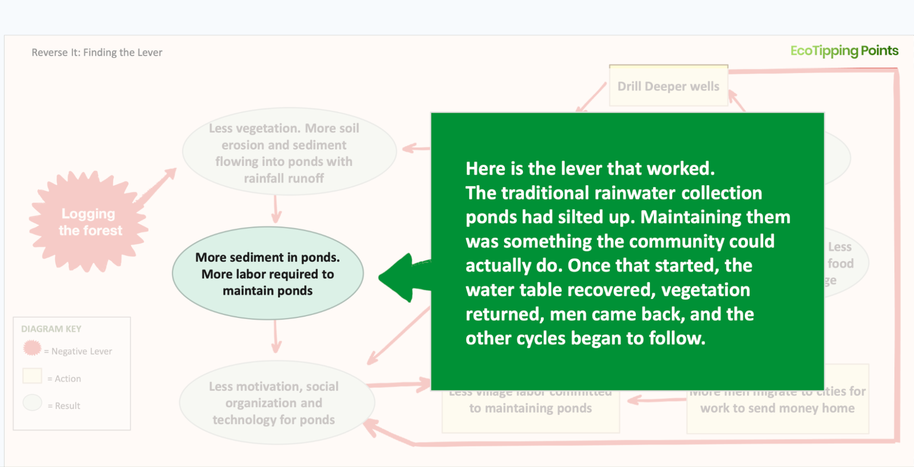
|
|
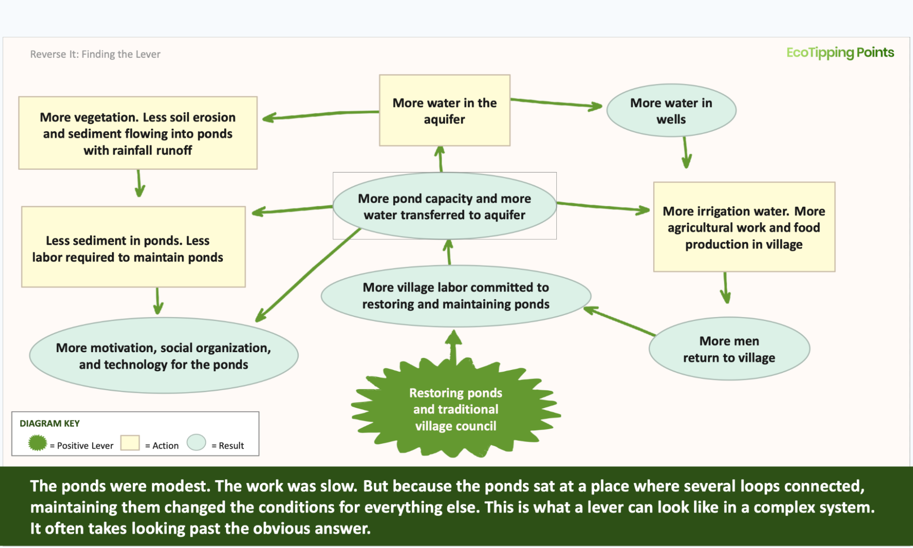
|
|
Choosing actions that are feasible for the community
Even if you locate an action that could break multiple vicious cycles, enlist nature's self-restorative power, increase harmony between the social system and ecosystem, and set off a chain of virtuous cycles, it still must be within the community's reach. A potential lever will only have enough force to trigger a turnabout if the community has the resources and commitment to carry it through and sustain the effort through tremendous sacrifice. Outside resources and support often help. But our case studies demonstrate that enduring success is most likely when a community has the time, energy, and finances to execute the plan, and the leadership to keep momentum through changing conditions and the serious obstacles that may emerge from social, political, and economic factors. A positive tipping point lever draws part of its force from the community itself, so its feasibility also comes down to the community's resolve.
Considerations for gauging feasibility:
- Is there community support for the action?
- What resources would this require? (money, time, skills, materials)
- Can the community provide the time, energy, and resources to carry it out?
- Are there outside organizations that can provide support for these resources?
- Does the community have the leadership needed to manage and enforce commitments?
- Does it require governance structures that don't yet exist?
- What obstacles might arise? (social, political, economic)
- Will there be pushback from other entities?
- Will there be encroachment or takeover from other entities
- What could go wrong?
- Will it involve short-term sacrifices that create excessive burdens for some members? If so, how will those burdens be shared?
- Does this change who benefits from the resource?
What resources or support do you have access to?
- Community skills and knowledge
- Natural resources that could regenerate
- Traditional practices that worked in the past
- Outside support (NGOs, government programs, etc.)
- Economic opportunities tied to restoration
LOCK IT IN
1. Ingredients Side Bar:
Harmony between ecosystems and social systems
Building Resilience
Ecological and social Diversity
Rapid Success/ Key Symbols
Overcoming Social Obstacles
BUILD the social fabricThe power of the social system, and whether a strong social fabric has been built that can carry out the work with the many obstacles and sacrifices that will be faced.
In the case of Apo, it was a marine sanctuary but also a set of regulations governing the fishing ground to exclude outside fishers and ban destructive fishing. In conjunction they had the power to tip the balance. But downstream of that, their community had decided that benefits would go into environmental education and scholarships and building other income sources to take some pressure off of the fishery. That set of actions is both one done in conjunctions, and ones planned as next potential steps, like chess, to map the path not just of an initial impact but of a sequence of events that become a virtuous cycle. For each new intentional choices to ensure the harmony between eco and social system, a co-adaptation, new virtuous cycles can emerge, and as they interlock their amplify power can tip the balance towards restoration. One change will not turn things around, a cycle will turn things around, which means multiples changes.
When a community is coping with the repercussions of spiraling ecological decline,
Being able to carry it out has to do with the power of the social system, and whether a strong social fabric has been built that can carry out the work with the many obstacles and sacrifices that will be faced. And whether that community will channel gains into the larger goal of tipping the balance to harmony between ecosystem and social system by having social gains go hand in hand with environmental gains. If choices are made to put those gains towards things that strengthen the fabric of the community to give it the strength to sustain work on changes, and towards expanding the health of the environment, then positiv espin-offs will happen that set in motion more virtuous cycles.
2. UNDERSTAND IT
3. Key Concept: good. But add on that to Lock it in bolstering and building crucial elements of the Ingredients for Success will increase chances of locking it in
4. SEE IT Diagram: Apo Positive Video Part 2 (spin-offs of tourism and education)
5. STRATEGIES to lead community work: Guiding Questions, etc revise to take out workshop
7. workshop guidance and resources: Link to Recognize it in community sessionz
Identify leverage points and design interventions that can reverse vicious cycles into virtuous ones.